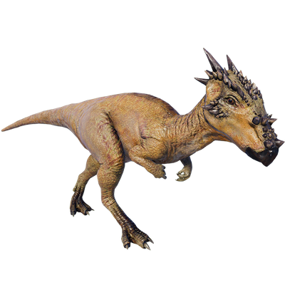

Useful Website
Dracorex – full name Dracorexis hogwartsia – is a herbivore from the pachycephalosaur family and is notable for its large horns and ridged skull. In fact, this dinosaur’s appearance gives a clue to its name; the English translation of Dracorex is ‘Dragon King’. Dracorex was approximately 3.5m in length and weighed in at over 1,300lbs, with an armoured skull that protected it from predators.
